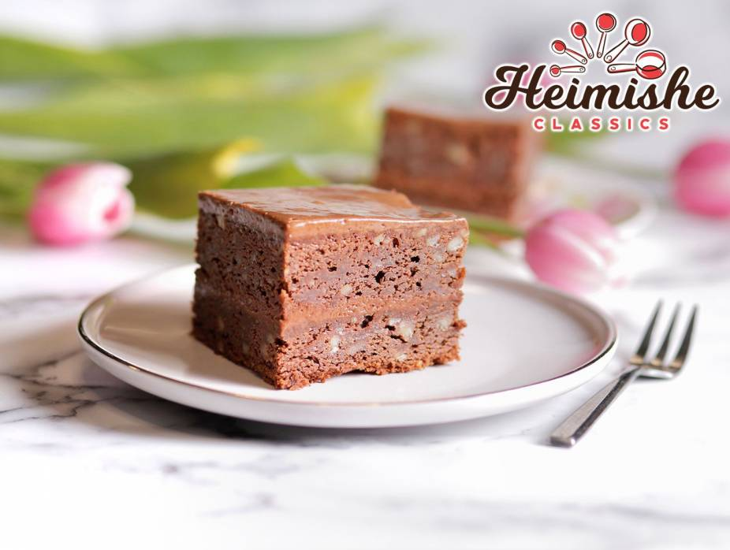
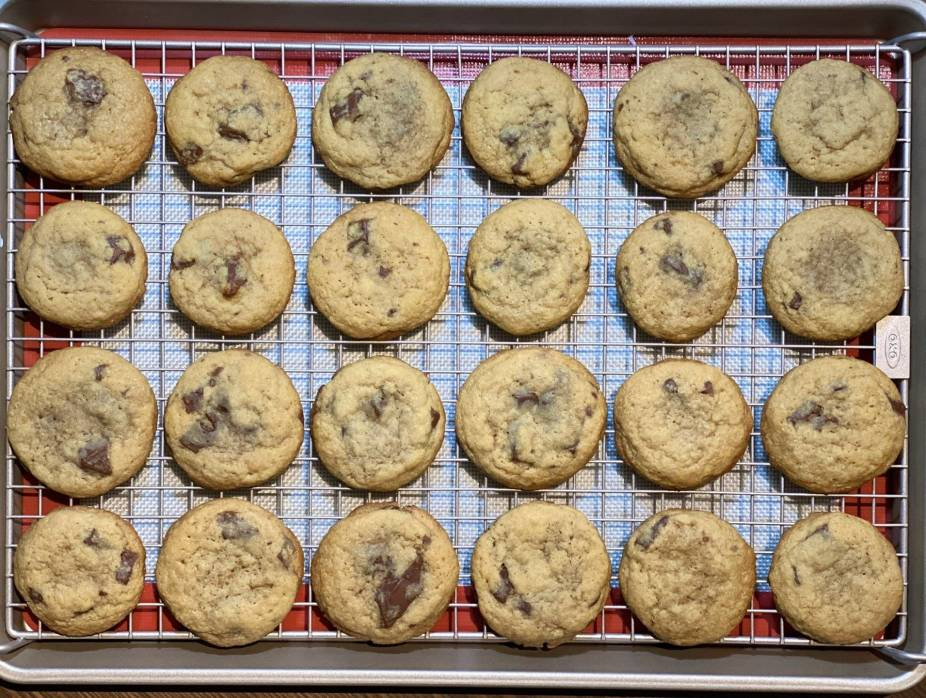

Tangy ginger, tart lemon and puckery cranberries make this melt-in-your-mouth cake as crisp—and gorgeous—as autumn.
Difficulty: Easy
Cooking and Prep: 1 hr and 20 min + cooling
Serves: 6
Allergies: Contains GLUTEN, WHEAT, EGG, DAIRY
Ingredients
Sugared Cranberries
3 tablespoons light corn syrup
1 cup fresh or frozen, thawed cranberries
1/3 cup sugar
Cake
1 cup butter, softened
2 cups sugar
4 large eggs, room temperature
2 tablespoons grated lemon zest
1 teaspoon lemon extract
2-1/2 cups all-purpose flour
2 teaspoons baking powder
1/2 teaspoon salt
1 cup fat-free vanilla Greek yogurt
Glaze
2/3 cup confectioners' sugar
2 tablespoons butter, melted
1 to 3 teaspoons lemon juice
1/2 teaspoon ground ginger
Prepare the Cake
For sugared cranberries, heat corn syrup in a microwave until warm; gently toss cranberries in syrup, allowing excess to drip off. Toss in sugar to coat. Place on waxed paper; let stand until set, about 1 hour.
Preheat oven to 325°. Grease and flour a 10-in. fluted tube pan. In a large bowl, cream butter and sugar until light and fluffy, 5-7 minutes. Add eggs, 1 at a time, beating well after each addition. Beat in lemon zest and extract.
In another bowl, whisk flour, baking powder and salt; add to creamed mixture alternately with yogurt, beating well after each addition.
Mix confectioners' sugar, butter, lemon juice and ginger until smooth. Drizzle over cake. Top with sugared cranberries.

Layered Truffle Cake with Magic Cream
This cake is what dreams are made of. All the effort that goes into making this cake is 100% worth it. The cake is rich, the nuts add flavor and texture, the cream is luscious and delicious. Put that all together and you have this amazing dessert that freezes beautifully and tastes incredible. The only thing you may regret about making this cake is the amount of calories you may consume!
Difficulty: Medium
Diet: Vegetarian , Pescetarian , Salt Free
Cooking and Prep: 4 hrs
Serves: 6
Allergies: Contains GLUTEN, NUTS, WHEAT, EGG
Ingredients
Main Ingredients
16 eggs
1 and 1/2 cups sugar
1 and 3/4 cups Gefen Confectioners' Sugar
8 ounces truffle-filled chocolate, melted
8 ounces baking chocolate, melted
1 pound margarine
1 and 1/2 cups ground walnuts or filberts
1 and 1/2 cups chopped walnuts or filberts
3/4 cup flour
Prepare the Cake
Beat eggs until stiff. Add sugars and beat until peaks form. Set aside in refrigerator.
Beat yolks and margarine on high speed until fluffy. Add chocolate and mix only until smooth.
Gently fold in egg whites. Fold in ground nuts.
Reserve two cups of batter to be used as frosting.
Add chopped nuts and flour to batter, mix well.
Pour batter into two lined cookie sheets. Bake at 350 degrees Fahrenheit for 25-30 minutes. Cool. Freeze for three hours.
Spread frosting over one cake layer. Invert second cake layer over frosted cake. Frost top of cake.
Can be garnished with grated chocolate. Cut into 1- and- 1/4-inch squares. (Cake cuts best while frozen). Serve chilled.

Chocolate Chunk Cookies
These chocolate chunk cookies will leave you with pockets of melted chocolate and a swirl action that will leave you wanting more.
Difficulty: Easy
Diet: Vegetarian , Pescetarian
Cooking and Prep: 25 min
Serves: 24
Allergies: Contains GLUTEN, DAIRY, WHEAT, EGG
Ingredients
Main Ingredients
5 ounces chocolate, chopped to chunks (2/3 cup)
2 and 1/2 cups all-purpose flour
1 and 1/2 teaspoons Gefen Baking Soda
1 teaspoon salt
2 sticks (1 cup) unsalted butter, room temperature
1 cup dark brown sugar, packed
1/3 cup white sugar
2 large eggs
1 and 1/2 teaspoons Gefen Vanilla Extract
Prepare the Cake
Preheat your oven to 350 degrees Fahrenheit and line a baking tray with a silicone baking mat or Gefen Easy Baking Parchment Paper.
In a medium-sized bowl, whisk together the all-purpose flour, baking soda, and salt. Set aside.
Using your stand mixer fitted with the paddle attachment beat the butter slightly, about 30 seconds.
Add in the brown and white sugars to the butter and mix until light and fluffy, about three minutes.
Add the eggs and the vanilla extract into the mixer and mix until combined. Using a cookie scoop, scoop the cookie dough onto your cookie sheet, leaving about one and a half inches in between each cookie, and bake for 12 minutes.
Note: Make sure not to over-bake these cookies. Every oven is different, so make sure not to bake them longer than 15 minutes because they will continue cooking on the baking sheet. You can use chocolate chips instead of chunks to make these classic chocolate chip cookies. You do not need to limit yourself to a plain chocolate bar. Add in whatever flavors you love.